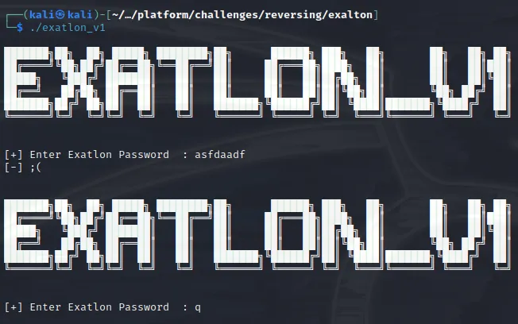
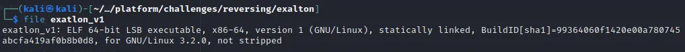
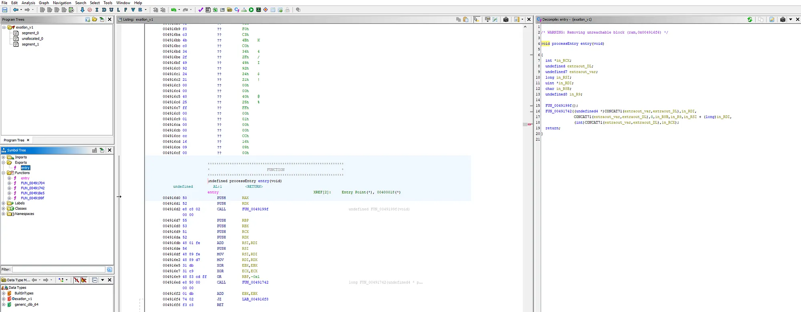
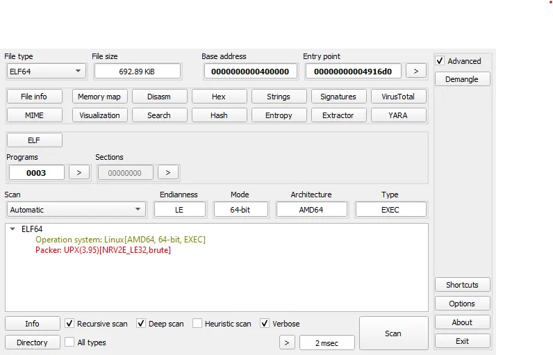
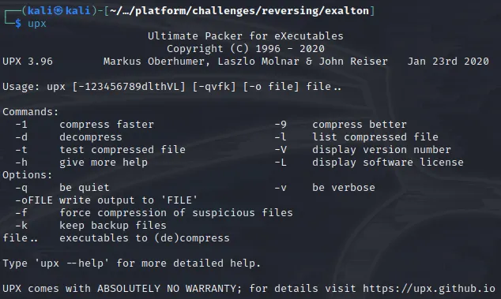
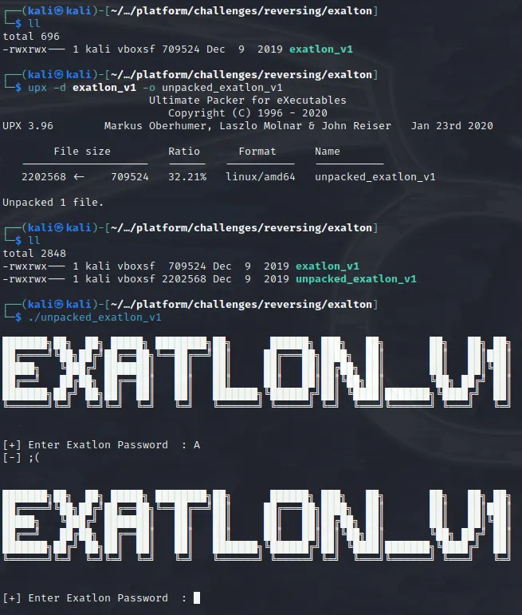
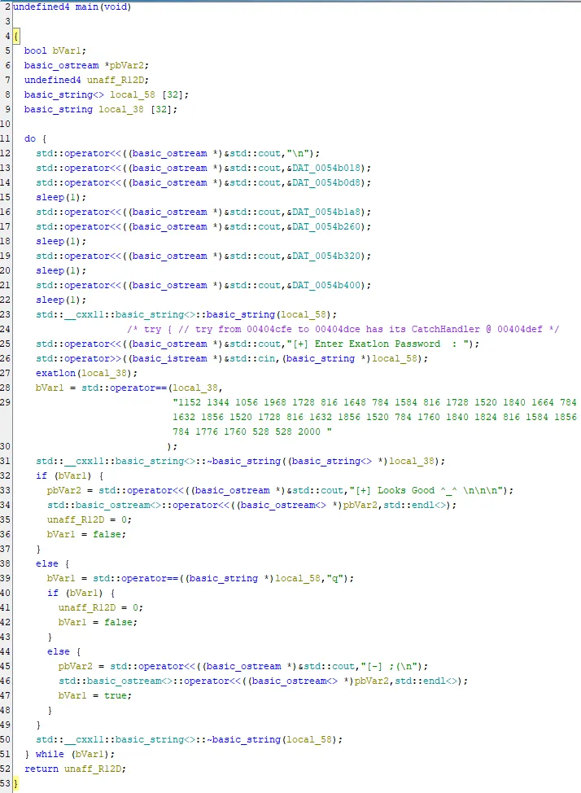
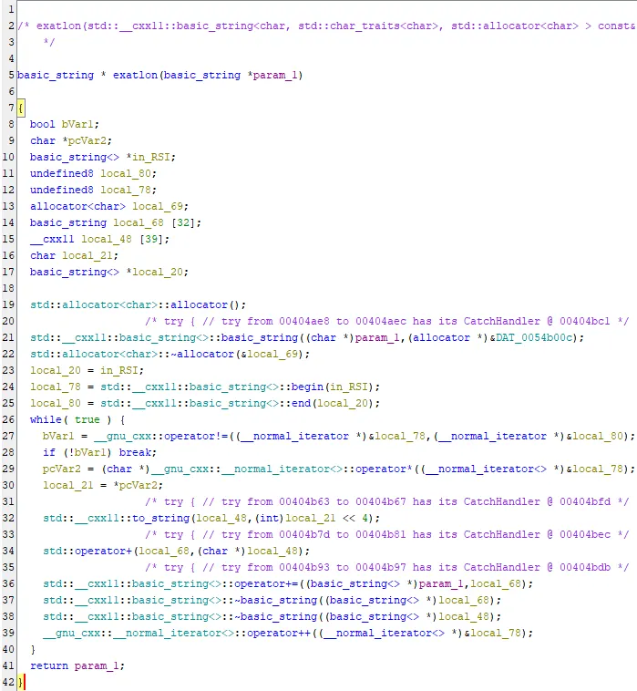

Exatlon — Hack The Box

Exatlon is one of the challenges marked as “Easy”. Why not take a look at this super interesting challenge? (kudos to OctopusTR)
After downloading the executable, let’s run some basic forensic analysis against it.
file exatlon_v1
Looks like it’s Linux executable. Let’s execute the app, see what’s going to happen.
Pretty standard RE challenge. Expecting the input from user and checks against something hidden inside the executable.
Let’s put the executable inside Ghidra to check if we can find the password inside.
Press enter or click to view image in full size

Definetely something is going on. First thing you see when seeing entry point like this and number of exported functions first things came to my mind.. Can this binary be packed? Let’s use Detect-It-Easy and see if it detects the pattern of some already known packing algorithm.

Well, we definetely has the answer to our question. The original executable is packed with UPX Packer. As you can read from README, UPX is a free, secure, portable, extendable, high-performance executable packer for several executable formats. The thing is that, UPX tool is also available for Kali. Let’s run the tool and get all available options/commands

As you can see, my Kali installation came with UPX v3.96. The interesting command is “decompress”. Instead of manually unpacking the hidden executable, let’s unpack it with the command UPX has to offer and double check we get the same execution flow.

Mission accomplished. What we have in our hands, ladies and gents, is unpacked executable of our actual challenge. What are you waiting for? Fire up the Ghidra and grab that flag ASAP.
Ghidra analyzed (and decompiled) the main function, let’s see what we have here..

There are multiple things we can understand from this piece of code.
- First, the banner gets printed
std:cinis called to get input from the user and gets stored into variableexatlonfunction gets called againstlocal_38variablelocal_38variable is checked againt very interesting string. If they are the same, we get output[+] Looks Good ^_^ \n\n\n
Let’s dig dive deep into exatlon function, let’s see what we can find there

Hmmm… interesting… The param_1value gets cleared and after some manipulation is returned to the caller.
Inside the while loop, we see “encryption” algorithm
- On every iteration, each character is being stored in
local_21variable. (Line 30) local_21variable is being casted to integer and then gets RoL’d (Left shift) by 4.- The shifted value gets stored in
local_48and added tolocal_68 local_68on its behalf, gets added toparam_1
Great, we have the “encryption” algorithm.
- Get each charater (each integer) from encrypted string we saw earlier
- Shift each of them to right by 4
- Cast is back to character
- Print the flag!
For this task, I chose to use Python programming language to automate the process. Here is my script:
encoded_data = "1152 1344 1056 1968 1728 816 1648 784 1584 816 1728 1520 1840 1664 784 1632 1856 1520 1728 816 1632 1856 1520 784 1760 1840 1824 816 1584 1856 784 1776 1760 528 528 2000"
[print(chr(int(item) >> 4), end="") for item in encoded_data.split(" ")]There you go.. The flag is recovered!